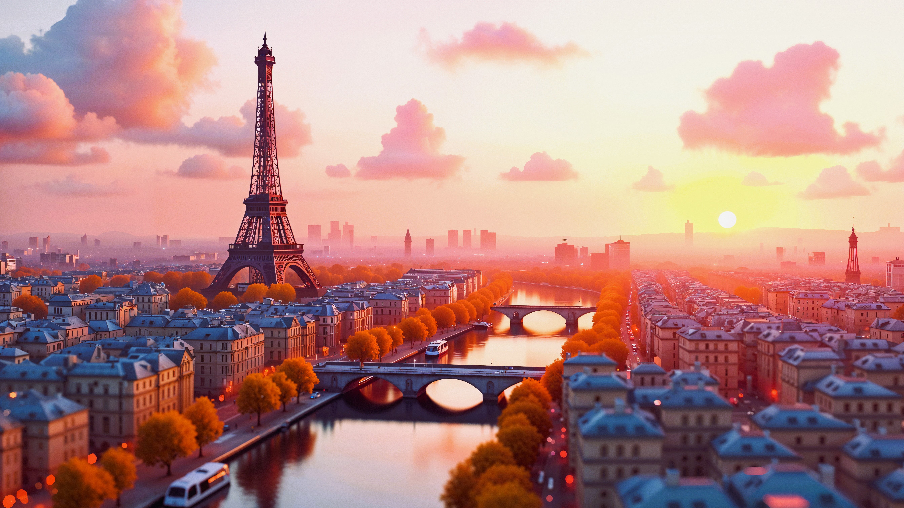

Paris, the capital of France, is known for its art, fashion, gastronomy, and culture. The city is home to the iconic Eiffel Tower, the Louvre Museum, and Notre-Dame Cathedral.
When visiting Paris, consider getting a Paris Pass for access to various attractions and public transport. Learning a few basic French phrases can also enhance your experience.
Don't miss trying classic French dishes like croissants, escargot, coq au vin, and crème brûlée. Explore local bistros and patisseries for an authentic taste of Paris.
The best time to visit Paris is during spring (March to May) for pleasant weather and blooming flowers, or in autumn (September to November) for fewer crowds and beautiful fall colors. Summer can be hot and crowded, while winter offers a magical holiday atmosphere.
Explore the romantic city of Paris — the Eiffel Tower, Louvre Museum, and charming cafés await you. A perfect destination for art, culture, and cuisine lovers.
← Back to Home